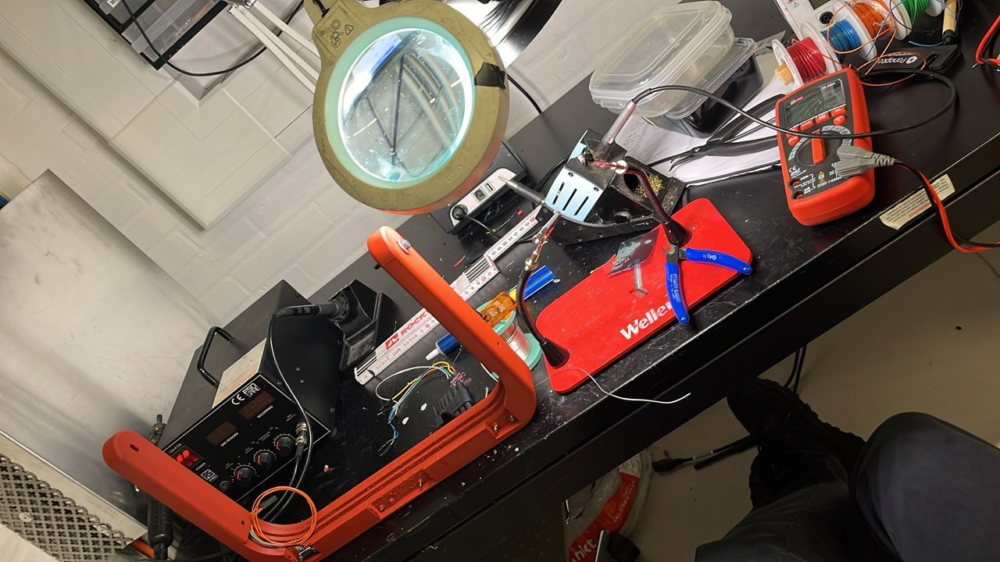
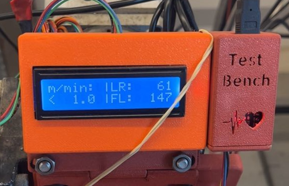

Project Overview
ERLEtek, a robotics startup, required a specialized sensor system for their robotic test platform. The challenge was to create an integrated solution that could accurately measure both distance and speed in real-time while being reliable and maintainable. I took ownership of the entire project lifecycle: from initial hardware design and component selection, through physical assembly and soldering, to firmware development and final application integration.
The system needed to have a reliable communication between different microcontrollers placed in different parts of the testbench. The Arduino Nano boards, all acting in parallel, had to collect data from the sensors, process it, and send it to the main control unit, a Raspberry Pi 5 via serial communication. The system had to provide accurate measurements with minimal latency, and be easily reconfigurable for different test scenarios. This required careful consideration of sensor specifications, microcontroller capabilities, and communication standards.
Key Components
The sensor system was built around several critical components:
- Microcontroller: Arduino-based platform for sensor data acquisition and processing
- Distance Sensors: TOF sensors for precise distance measurement
- Speed Sensors: Encoder-based sensors for rotational speed measurement
- Communication Module: I2C interface for integration between sensors and Nano boards, and serial communication between the Nanos and the main control system
- Power Management: Power supply was designed to be controlled by the Raspberry Pi 5
- Protective Housing: 3D-printed enclosure designed on OnShape with precise cutouts for sensors and integration points
Development Process
1. Requirements Analysis & Design
I started by understanding the specific requirements of the robotic platform and sketching the electrical design.
The sensors chosen were already well-integrated internally thanks to the previous work of the team.
This allowed me to focus on optimizing the overall system architecture.
The Tof sensors VL6180X (short range) and VL53L0x (long range) are connected via I2C to the Arduino Nano. On the other side, another arduino Nano is connected with a rotary encoder that measures the printing. Both these boards process the data and send it to the Raspberry Pi 5 via serial communication. In the RPI, a Python script runs to receive the data and perform high-level processing. Sending the filtered data to a LCD display for real-time monitoring and saving it for later analysis.
2. Hardware Design
Using OnShape, I designed a custom sensor housing for both the TOF sensors and the speed encoder that would securely mount all components.
while allowing for easy maintenance and calibration. The design ensured optimal sensor placement for accurate readings.
A complete assembly can be seen in the image at the top and it's composed by three main parts plus the RPI enclosure:
- The Gearbox: A gear overdrive to multiply (1:4) the speed of the wheel measured by the rotary encoder that would otherwise be too slow for accurate measurement.
- The Crown: Custom "crown" to hold the TOF sensors around the printing Head at precise angles and distances.
- The Display Cover: A simple case to protect the LCD display and provide a user-friendly interface.
The Crown design is composed of several pieces that fit together and precisely fit the TOF sensors. The design allows fast prototyping, and precise sitting around the printing head.
3. Assembly & Soldering
I carefully assembled all components, performing precision soldering work to ensure reliable electrical connections.
Each solder joint was tested to guarantee no cold joints or poor connections that could cause measurement errors.

4. Firmware Development
Using C++, I developed the firmware to handle sensor data acquisition, apply calibration corrections,
and prepare data for transmission. The code included error handling and sensor validation routines.
5. Communication Protocol Implementation
I implemented the I2C communication protocol to assign specific addresses to each sensor and communicate with the Nanos.
Then I configured the Nanos to dialogue with the Raspberry Pi and to start/stop sending readings and communicating issues.
6. Software Development
As the Raspberry Pi was the central hub mounting an Ubuntu 24 Desktop environment,
I developed a system service to listen for the press of a button, and a Python application to manage
sensor data collection, processing, and visualization.
6. Application Level Implementation
Then, the Raspberry Pi was configured to accept a remote desktop connection, allowing for data retrieval and visualizations
in a user-friendly way.
7. Testing & Calibration
Extensive testing was performed to validate measurement accuracy across the entire operating range.
I created calibration procedures in Python to adjust sensor parameters for optimal performance.
8. Integration & Deployment
Finally, the system was integrated into the Testbench system,
ensuring smooth communication and reliable operation under real-world conditions.

Tools & Technologies Used
Challenges & Solutions
Challenge: Speed measurement inaccuracy
The encoder accuracy of 12 ticks per rotation was high, but still too low for an average rotational speed of one turn every 20 seconds.
I implemented a gear overdrive to gather more ticks per rotation, effectively increasing the resolution of the speed measurements.
Challenge: Heavy workload
Initial designs demanded too much computational power., mainly because a single Nano board was supposed to carry all the workload.
Plus, the encoder, working with interrupts, was interfering with the TOF sensor measurements.
I properly divided the tasks across multiple boards increasing the modularity and reducing power issues.
Challenge: I2C Communication Reliability
At high data rates, and long distances (more than 5 meters), the I2C connection was unreliable.
I rethought the cable management and moved the length of the cables from the I2C bus to the serial communication line.
I also implemented a reconnection mechanism to ensure robust communication and point of failure identification.